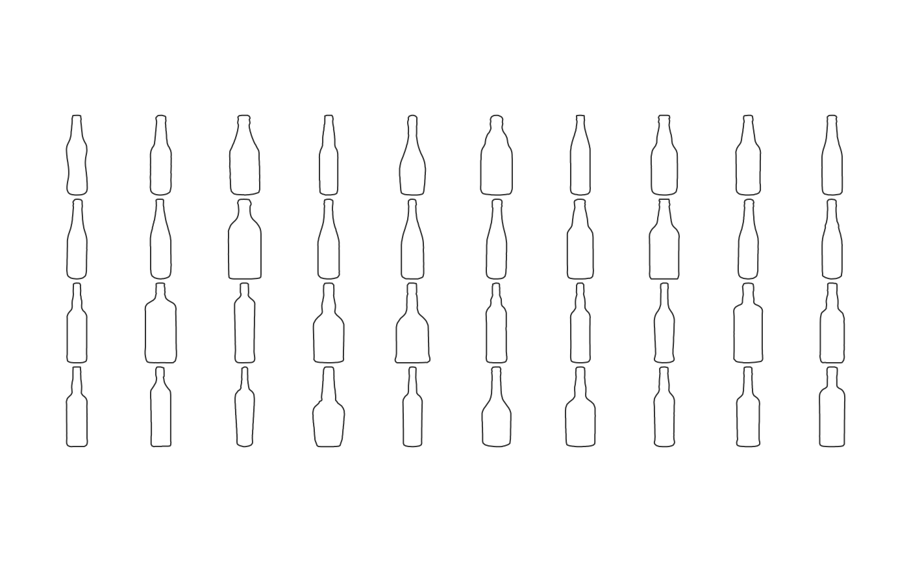

Family picture of shapes
Plots all the outlines, side by side, from a Coo (Out, Opn or Ldk) objects.
panel(x, ...) # S3 method for Out panel(x, dim, cols, borders, fac, palette = col_summer, coo_sample = 120, names = NULL, cex.names = 0.6, points = TRUE, points.pch = 3, points.cex = 0.2, points.col, ...) # S3 method for OutCoe panel(x, nb.pts = 120, ...) # S3 method for Opn panel(x, cols, borders, fac, palette = col_summer, coo_sample = 120, names = NULL, cex.names = 0.6, points = TRUE, points.pch = 3, points.cex = 0.2, points.col, ...) # S3 method for Ldk panel(x, cols, borders, fac, palette = col_summer, names = NULL, cex.names = 0.6, points = TRUE, points.pch = 3, points.cex = 0.2, points.col = "#333333", ...)
Arguments
| x | The |
|---|---|
| ... | additional arguments to feed generic |
| dim | for coo_listpanel: a numeric of length 2 specifying the dimensions of the panel |
| cols | A |
| borders | A |
| fac | a factor within the $fac slot for colors |
| palette | a color palette |
| coo_sample | if not NULL the number of point per shape to display (to plot quickly) |
| names | whether to plot names or not. If TRUE uses shape names, a column name or number from $fac can be supllied, or even a character of the same length of the Coo |
| cex.names | a cex for the names |
| points |
|
| points.pch | (for Ldk) and a pch for these points |
| points.cex | (for Ldk) and a cex for these points |
| points.col | (for Ldk) and a col for these points |
| nb.pts | the number of points to use for the shape reconstruction |
Note
If you want to reorder shapes according to a factor, use arrange.
See also
Other Coo_graphics: inspect,
stack.Coo
Examples
panel(mosquito, names=TRUE, cex.names=0.5)panel(olea)panel(bot, c(4, 10))#>panel(bot.f)#> Error in as.Out(x, nb.pts = nb.pts): could not find function "as.Out"# an illustration of the use of fac panel(bot, fac='type', palette=col_spring, names=TRUE)